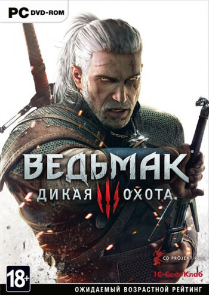

Ведьмак 3: Дикая Охота

Ведьмак 3: Дикая Охота — третья игра серии Ведьмак, а также заключительная часть трилогии, разработанная польской компанией CD Projekt RED по мотивам серии романов «Ведьмак» польского писателя Анджея Сапковского, продолжение игр «Ведьмак» и «Ведьмак 2: Убийцы Королей».
Сюжет
В центре сюжета новое вторжение Империи Нильфгаард, поиски Цири и конфликт с Дикой Охотой. Сюжет не делится на главы, как в предыдущих играх, что стало осуществимым благодаря новому движку.
В игре появляются такие персонажи как Весемир, Ламберт, Эскель, Лютик, Золтан Хивай, Трисс Меригольд, Кейра Мец, Сигизмунд Дийкстра, Вернон Роше, Лето из Гулеты, Цирилла, Йеннифер, Эмгыр вар Эмрейс и многие другие.
Возвращение некоторых персонажей зависит от принятых игроком решений во второй части игры (это можно сделать и не переносив сохранения).
Сюжет предусматривает 36 финальных состояний мира, к которым могут привести действия игрока.
Разработка
Игра была анонсирована 5 февраля 2013 года. Выпуск игры был запланирован на 2014 год. Но в марте 2014 года разработчики The Witcher 3 выступили с открытым письмом, в котором сообщили, что выпуск переносится на февраль 2015 года. Вскоре вновь состялся перенос анонса и игра вышла в мае 2015 года.